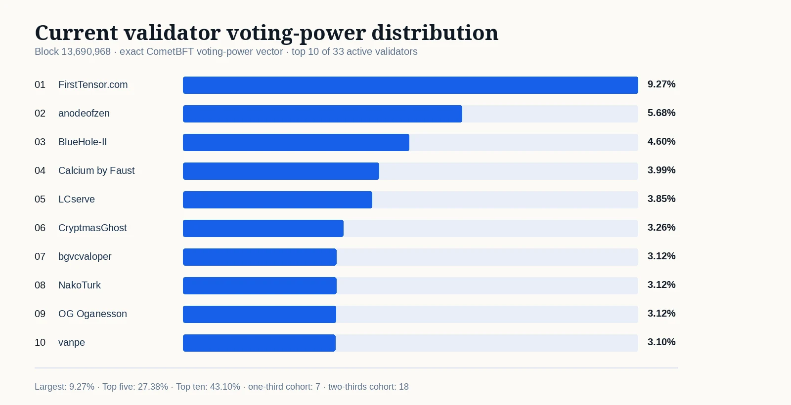
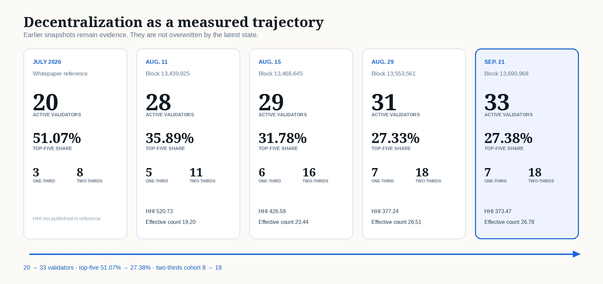

GenesisL1 Stake Distribution and Decentralization
A reproducible block-pinned analysis of GenesisL1 validator voting power, bonded L1, delegation concentration and decentralization across five preserved measurements.
This article tests one proposition from GenesisL1 and the Next Verifiable Renaissance: public scientific infrastructure should not ask institutions to trust a permanent adjective such as “decentralized.” It should publish states that can be independently measured, compared and reproduced.
The latest stake-distribution package is pinned to GenesisL1 block 13,690,968, dated September 21, 2026 at 04:58:47 UTC. It preserves raw CometBFT, Cosmos staking, delegation, bank-supply and EVM responses; complete validator, delegation and delegator CSV files; exact calculations; a manifest; and 158 SHA-256 checksums.
Executive finding
At the latest pinned height, GenesisL1 recorded:
| Current observable state | Result |
|---|---|
| Active consensus validators | 33 / 50 |
| Largest validator share | 9.27% |
| Top-three / top-five / top-ten share | 19.54% / 27.38% / 43.10% |
| Validators required to exceed one third / two thirds | 7 / 18 |
| Validator HHI / effective validator count | 373.47 / 26.78 |
| Validator Gini / normalized entropy | 0.2140 / 0.9708 |
| Bonded stake | 25,555,236.79 L1 |
| Bonded share of native supply | 53.94% |
| Active delegator addresses / relationships | 1,402 / 2,197 |
| Largest / top-five / top-ten delegator-address share | 3.62% / 15.77% / 26.94% |
| Delegator-address HHI / effective address count | 153.98 / 64.94 |
| Delegator-address Gini / normalized entropy | 0.9546 / 0.6123 |
| Delegator one-third / two-thirds coefficients | 14 / 38 |

Current active-validator distribution at block 13,690,968. Shares are calculated from the exact CometBFT voting-power vector.
Since the July reference, the active validator set expanded by 13 validators, the largest-validator share declined by 3.82 percentage points, and the top-five share declined by 23.69 points. The one-third coefficient widened from 3 to 7, and the two-thirds coefficient from 8 to 18.
The newest interval is deliberately less simple. From August 29 to September 21, the active set expanded from 31 to 33, top-ten share fell from 43.88% to 43.10%, HHI improved from 377.24 to 373.47, and effective validator count rose from 26.51 to 26.78. At the same time, the largest-validator share rose from 7.96% to 9.27%, while top-five share was nearly unchanged. Decentralization is therefore observable and dynamic, but not monotonic in every measure.
This does not establish permanent decentralization or organizational independence. It establishes a reproducible trajectory in voting-power and delegation distribution.
Measurement design
The headline consensus metrics use the exact CometBFT validator set and integer voting_power values returned at the pinned height. Cosmos staking records attach operator metadata, token balances, status and commission information. Delegation endpoints enumerate the relationships associated with registered validators. Staking-pool and bank-supply responses provide the denominator for the bonded-ratio calculation.
The package computes:
- rank and cumulative voting-power share;
- largest, top-three, top-five and top-ten share;
- the smallest leading cohort strictly exceeding one third and two thirds;
- Herfindahl–Hirschman Index, scaled to 10,000;
- effective validator count,
1 / Σsᵢ²; - Gini coefficient;
- normalized entropy;
- the same concentration family over total bonded delegation per active delegator address;
- bonded stake as a percentage of total native supply.
CometBFT uses more than two thirds of voting power for commit formation. The one-third coefficient is therefore principally liveness-relevant: coordinated non-participation or correlated outage at that scale can prevent the remaining voting power from reaching the commit threshold. It should not be described as the number of validators that can unilaterally rewrite state.
Validator voting-power distribution
The current validator set contains 33 active consensus operators. The largest holds 9.27%, while the top five collectively hold 27.38%. The first 6 validators remain below one third; the 7th moves the leading cumulative share above it. The first 17 remain below two thirds; the 18th moves the cumulative share above the commit threshold.
| Rank | Validator | Share | Cumulative | Delegation relationships |
|---|---|---|---|---|
| 1 | ⚡ FirstTensor.com ⚡ | 9.27% | 9.27% | 44 |
| 2 | anodeofzen | 5.68% | 14.94% | 300 |
| 3 | BlueHole-II | 4.60% | 19.54% | 17 |
| 4 | Calcium by Faust | 3.99% | 23.53% | 70 |
| 5 | LCserve | 3.85% | 27.38% | 31 |
| 6 | CryptmasGhost | 3.26% | 30.64% | 114 |
| 7 | bgvcvaloper | 3.12% | 33.76% | 66 |
| 8 | NakoTurk | 3.12% | 36.88% | 123 |
| 9 | OG Oganesson | 3.12% | 40.00% | 204 |
| 10 | vanpe | 3.10% | 43.10% | 17 |
The HHI of 373.47 corresponds to an effective validator count of 26.78. In plain terms, the observed voting-power distribution has the same HHI as an equally weighted set of about 26.78 validators. The normalized entropy of 0.9708 remains close to 1, while the validator Gini is 0.2140.
The latest state illustrates why a metric family is more informative than a single headline number. The leading share increased since August 29, but the active set expanded, top-ten concentration decreased, HHI improved and effective count increased. Top-share measures reveal the leading cohort; HHI emphasizes large shares; effective count converts HHI into an intuitive equivalent set size; Gini measures inequality across the active vector; entropy measures proximity to maximum dispersion for the observed set size.
Delegator-address distribution
Validator voting power and delegator distribution answer different questions.
At block 13,690,968, 1,402 addresses held a nonzero bonded delegation to active validators. The package records 2,197 delegation relationships to active validators, of which 1,910 carry a nonzero balance; 229 addresses hold relationships with more than one active validator (167 with nonzero balances at more than one). Address counts include only nonzero bonded balances; relationship counts include zero-balance records exactly as returned. The largest active delegator address represented 3.62% of bonded delegation; the top five represented 15.77%, the top ten 26.94%, and the top 25 51.72%.
The smallest leading address cohort exceeding one third contained 14 addresses, while the cohort exceeding two thirds contained 38. Delegator-address HHI was 153.98, corresponding to an effective address count of 64.94.
Compared with August 29, the largest-address share fell from 3.85% to 3.62%, top-ten concentration fell from 27.51% to 26.94%, delegator HHI fell from 158.68 to 153.98, and effective address count rose from 63.02 to 64.94. The active-delegator population increased from 1,388 to 1,402.
An address is not an entity. Exchanges, custodians and multisigs can aggregate many beneficiaries into one address, while one party can control many addresses. Address-level dispersion is neither an upper nor a lower bound on beneficial-owner dispersion. It is a distinct and weaker measurement of what the ledger exposes.
The high delegator Gini (0.9546) should also be interpreted with care. The address set contains a long tail of very small balances, so Gini remains high even as the largest shares decline. HHI, effective count and top-cohort shares are more directly useful for comparing leading concentration across pinned snapshots.
A longitudinal record, not an overwritten dashboard
| Measurement | July reference | Aug. 11 · 13,439,825 | Aug. 15 · 13,466,645 | Aug. 29 · 13,553,561 | Sep. 21 · 13,690,968 |
|---|---|---|---|---|---|
| Active validators | 20 | 28 | 29 | 31 | 33 |
| Largest validator | 13.09% | 9.03% | 8.69% | 7.96% | 9.27% |
| Top three | 35.62% | 23.20% | 22.62% | 19.19% | 19.54% |
| Top five | 51.07% | 35.89% | 31.78% | 27.33% | 27.38% |
| Top ten | — | 63.22% | 49.73% | 43.88% | 43.10% |
| One-third coefficient | 3 | 5 | 6 | 7 | 7 |
| Two-thirds coefficient | 8 | 11 | 16 | 18 | 18 |
| Validator HHI | — | 520.73 | 426.59 | 377.24 | 373.47 |
| Effective validator count | — | 19.20 | 23.44 | 26.51 | 26.78 |

Five published measurements preserve the trajectory rather than replacing earlier states with a moving dashboard.
From August 11 to September 21:
- active validators increased from 28 to 33;
- top-five share fell from 35.89% to 27.38%;
- validator HHI fell from 520.73 to 373.47, a decline of 28.3%;
- effective validator count rose from 19.20 to 26.78, an increase of 39.4%;
- the one-third coefficient widened from 5 to 7;
- the two-thirds coefficient widened from 11 to 18.
The August 29 → September 21 interval is mixed in the leading shares: the largest share rose by 1.31 points and top-five share rose by only 0.05 points, while top-ten share fell, HHI improved and effective count increased. This is exactly why earlier snapshots remain in the evidence tree. A new state should not erase the old one, and no single concentration metric should be treated as the network’s permanent identity.
The history itself is the evidence.
Bonded stake and distribution are separate dimensions
The absolute bonded amount was 24,957,676.89 L1 on August 11, 24,794,964.00 L1 on August 15, 25,159,069.15 L1 on August 29 and 25,555,236.79 L1 on September 21. The bonded share of native supply moved from 53.36% to 52.94%, 53.48% and 53.94%.
The path was not monotonic at first: bonded stake decreased between the first two August measurements, then recovered above the August 11 level and continued higher. Distribution metrics followed their own path. Between August 29 and September 21, the active set expanded and HHI improved even though the leading validator’s share increased.
That distinction matters. More stake is not automatically more decentralization, and a lower bonded amount is not automatically less decentralization. Security participation, voting-power concentration, operator independence, key custody, hosting diversity and governance behavior are related but separate dimensions.
What the evidence proves
The package establishes, at one exact block:
- the active consensus validator set and voting-power vector;
- the ranked threshold cohorts;
- the staking validator records and pool totals returned by the selected provider;
- the enumerated delegation relationships and address-level totals;
- the bank-supply denominator used for the bonded ratio;
- the exact calculations and their reproducible inputs;
- the block hash and timestamp to which the measurement is anchored.
It does not establish:
- that differently named validators have different beneficial owners;
- that operators use independent hosting providers, jurisdictions or upgrade processes;
- that delegator addresses correspond one-to-one with people or institutions;
- that present distribution will persist;
- that consensus distribution alone proves scientific validity or application adoption.
Those are additional evidence questions.
Reproduce the current package
The bundle contains the complete current snapshot under:
evidence/stake-distribution/block-13690968/
Verify its 158 listed files:
cd evidence/stake-distribution/block-13690968
sha256sum -c SHA256SUMS.txt
Earlier snapshots remain under:
evidence/stake-distribution/history/block-13439825/
evidence/stake-distribution/history/block-13466645/
evidence/stake-distribution/history/block-13553561/
Machine-readable analysis is provided in:
content/stake-distribution/stake-analysis.json
content/stake-distribution/stake-evolution.csv
content/stake-distribution/current-top-validators.csv
content/stake-distribution/current-top-delegators.csv
The public validator directory is available through the GenesisL1 explorer:
https://explorer.genesisl1.org/validators
One technical proof within a larger Renaissance thesis
This analysis supports one claim in the visionary article: public infrastructure can distribute stewardship outward and publish evidence of that movement.
It does not prove the entire Renaissance thesis. Molecular reconstruction, deterministic model execution, confidential rights, agent accountability, public patronage and institutional node economics require separate analyses.
That separation is intentional. A scientific publication system becomes more credible when each claim has its own evidence boundary.
Sources
- Current GenesisL1 stake-distribution snapshot, block 13,690,968. Open raw evidence and checksums ↗
- Preserved August 29 snapshot, block 13,553,561. Open longitudinal evidence ↗
- Preserved August 15 snapshot, block 13,466,645. Open longitudinal evidence ↗
- Preserved August 11 snapshot, block 13,439,825. Open longitudinal evidence ↗
- GenesisL1 Technical Whitepaper, Version 1.0. Open whitepaper ↗
- CometBFT consensus specification, v0.38. Open specification ↗
- GenesisL1 validator explorer. Open validator directory ↗
This article measures public ledger state. It does not identify beneficial owners, establish scientific validity or constitute investment advice.